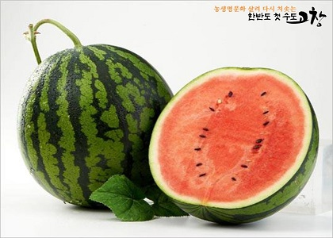

고창의 7~9월 평균 최고 기온은 28~32'C로 수박 재배에 적합한 온도와 동일해 매해 적절한 일조량을 확보할 수 있다.
또한 고창은 미네랄 성분이 가득 담긴 붉은 황토로 이루어져 건강한 농박물 생산에 유리하다.
그뿐만 아니라 황토에 모래 진흙이 섞여 공기와 물의 유통이 좋고 비료 분해가 빠르다.
전북농업기술원에서도 고창 수박 개발에 박차를 가한다.
기술 교육, 시설재배 연구, 현장 컨설팅을 수료한 명품 수박 아카데미 교육생을 배출해 각지에 미래 발전형 농법을 전파한다.
풍족한 재배 조건을 갖추고 끊임없이 수박 연구와 개발을 시도하는 고창군.
사람들이 고창 수박을 찾는 이유를 알 법하다.